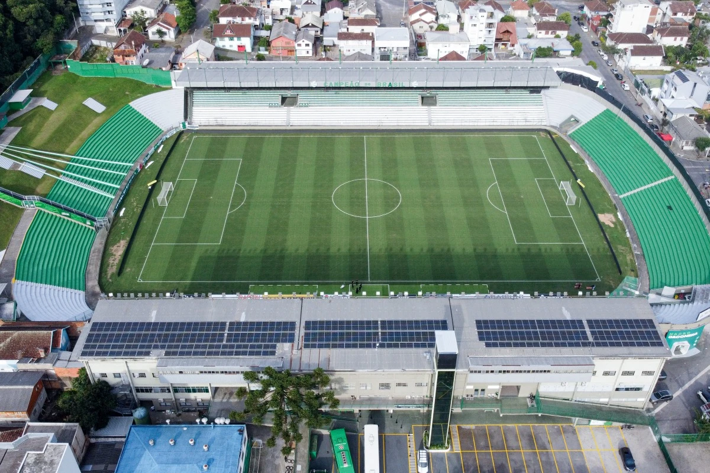
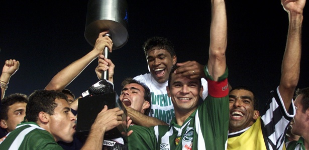
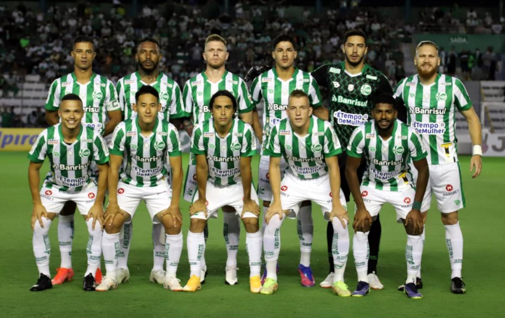

O Esporte Clube Juventude foi fundado em 29 de junho de 1913, na cidade de Caxias do Sul, Rio Grande do Sul,
por um grupo de 35 jovens, em grande parte descendentes de imigrantes italianos. O nome "Juventude" reflete
o espírito e a idade de seus fundadores. O clube adotou o verde e o branco como suas cores.
Por décadas, o Juventude se firmou como o principal clube do interior do Rio Grande do Sul, resistindo à
hegemonia da dupla Gre-Nal (Grêmio e Internacional) da capital.
Seu período de maior glória ocorreu na década de 1990:
Em 1994, o Juventude quebrou uma longa sequência da dupla da capital ao conquistar o Campeonato Gaúcho.
O ápice veio em 1999, quando o clube conquistou a Copa do Brasil, seu título mais importante. O time venceu
o Botafogo na final, tornando-se o primeiro e único clube do interior gaúcho a levantar um troféu nacional
de grande porte.
O Juventude é reconhecido por sua tradição, resiliência em competições nacionais e por ser um importante
celeiro na formação de jovens talentos.

O Estádio Alfredo Jaconi é a casa do Esporte Clube Juventude em Caxias do Sul.
Inaugurado em 1975, o estádio leva o nome de Alfredo Jaconi, uma figura histórica que foi jogador, técnico e
dirigente do clube. O Jaconi é conhecido por sua atmosfera de caldeirão, onde a torcida Jaconera exerce
grande pressão sobre os adversários, e por ter sido o palco da maior glória do clube: o título da Copa do
Brasil de 1999.
Com capacidade aproximada para 19 mil torcedores, o estádio está localizado no centro da cidade, o que o
torna um ponto de encontro tradicional e de grande representatividade para a comunidade de Caxias do Sul.

A Copa do Brasil de 1999 representa o auge da história do Juventude e um feito inédito para o futebol gaúcho,
pois foi a primeira vez que um clube fora de Porto Alegre conquistou um título nacional de grande expressão.
A Campanha: O Juventude fez uma campanha marcada pela solidez defensiva e por vitórias importantes,
eliminando equipes de maior investimento, como o Corinthians nas quartas de final e o Internacional (seu
maior rival) nas oitavas.
Final: A grande final foi disputada contra o Botafogo, do Rio de Janeiro.
-No primeiro jogo, em Caxias do Sul, o Juventude venceu por 2 a 1.
No jogo de volta, no Maracanã, o Juventude conseguiu segurar o empate em 0 a 0, um resultado que garantiu o
título e calou o estádio carioca.

Técnico: Thiago Carpini
Jogadores:
Goleiros: Jandrei, Ruan carneiro, Gastón Guruceaga, Zé Henrique
Defensores:Abner Natã, Rodrigo Sam, Wilker Ángel, Luan Freitas, Marcelo Hermes, Alan Ruschel,
Ewerthon, Igor Formiga, Reginaldo
Meio campistas: Juan Sforza, Caíque Gonçalves, Daniel Giraldo, Mandaca, Jádson, Lucas Fernandes,
Nenê
Atacantes: Gabriel Veron, Gilberto, Giovanni, Matheus Babi, Emerson Galego, Gabriel Taliari, Emerson
Batalla, Edison Negueba, João Scatolin, Ênio, Rafael Bilu